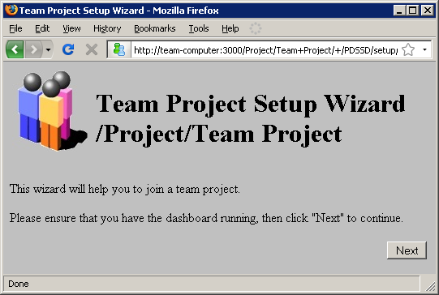

As an individual, your personal historical data is very useful for planning, tracking, and personal process improvement. So the dashboard strives to let you keep all of your personal historical data in one place. You can use a single Process Dashboard dataset to collect all of your personal data, even if you move from team to team and work on many different projects over time. Because of this flexibility, you must tell the dashboard when you are joining a new team project.
Before you can join the project, you must have successfully installed the Process Dashboard. Start the Process Dashboard and leave it running.
Your team leader will send you a special URL or file that you can use to join the team project. If they send a URL, open it in a Web browser. If they send a file, drag and drop it onto your Process Dashboard window.

If your team leader sends you a URL, but you get an error message like "Server not found" or "This page cannot be displayed" when you attempt to visit this page, contact your team leader and ask for help. They may send you a "joining file" instead.
When the Team Project Setup Wizard appears successfully, it will display a form to collect information about the project. Fields with a white background need your attention, but you can accept the default values that appear in the gray fields. As you click on each field, explanations will appear to help you understand what you should enter.
One of the fields will ask you for your initials. Your team leader may tell you which initials you should use for this particular team project. (If you enter the wrong initials, do not worry; you can easily fix them later by opening the Project Parameters and Settings page for this team project.)
When the wizard finishes, you can close the browser window.